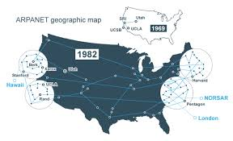

|
PRIMORDIOS DA INTERNETO surgimento da internet teve relação com a disputa tecnológica travada entre os Estados Unidos e a União Soviética durante o período da Guerra Fria. No contexto da corrida espacial, os soviéticos lançaram Sputnik — o primeiro satélite artificial — para o espaço. Esse evento fez com que o governo norte-americano desenvolvesse um projeto que resultaria na criação da internet. Em 1958, surgiu a Advanced Research Projects Agency (Arpa), atualmente conhecida pela sigla Darpa. Essa agência estabeleceu um programa para o desenvolvimento de um sistema que permitisse o envio de informações e dados importantes entre os centros militares e de pesquisa e o Pentágono. Além disso, pensava-se em usá-lo para proteção e defesa do país em caso de uma guerra nuclear. O projeto em questão realizado pela Arpa foi nomeado de Arpanet e conduzido por Robert Taylor e Lawrence Roberts, e ainda contou com estudos realizados por inúmeros outros cientistas. Na época foi usada a Wide Area Networks (WAN) como tecnologia para a transmissão dos dados. A Arpanet foi inaugurada em 1969, e, na época, havia apenas quatro computadores nos Estados Unidos capazes de suportar o envio de dados por essa rede. Na ocasião, a mensagem foi enviada de um computador da Universidade da Califórnia, em Los Angeles (UCLA), para outro computador no Instituto de Pesquisa Stanford (SRI), em Menlo Park, também na Califórnia. O teste inicial seria realizado com o envio da mensagem “log win”, mas o computador em Stanford não suportou a operação e travou quando recebeu a letra “g”. Um segundo teste, realizado momentos depois, teve sucesso. A partir daí, uma conexão permanente se estabeleceu entre UCLA e SRI. A internet foi criada para estabelecer uma rede de informação e comunicação entre centros militares e de produção científica dos Estados Unidos. A intenção foi facilitar a troca de informações entre esses espaços e, consequentemente, consolidar um mecanismo de defesa contra os soviéticos, já que o contexto era da Guerra Fria. |
DECADA DE 1970Na década de 1970, a Arpanet era utilizada tanto por pesquisadores como por militares, e assim se estabeleceu que o e-mail (correio eletrônico) seria o principal meio de comunicação, permitindo o envio de mensagens entre usuários de maneira facilitada. Além disso, começaram a ser criados aplicativos para serem usados nos computadores ligados à Arpanet. A tecnologia utilizada para isso foi o protocolo de comunicação chamado Network Control Protocol (NPC). À medida que a Arpanet passou a ser mais utilizada, surgiu a necessidade de padronização dos protocolos de comunicação, e daí criou-se o Transmission Control Protocol/Internet Protocol (TCP/IP), implantado em 1983. Essa tecnologia de comunicação é responsável por ler a informação e transmiti-la para o outro usuário. Entretanto, durante todo esse processo, o uso da Arpanet se tornou tão intenso que os militares tiveram de separar suas redes daquelas usadas pelos pesquisadores por motivos de segurança. Em 1983, o acesso militar à Arpanet foi migrado para a Milnet, uma rede exclusiva para uso militar. |
DECADA DE 1980A Arpanet seguiu sendo usada por pesquisadores, e também passou a ter fins comerciais a partir da década de 1980. Nessa mesma década, a internet começou a se estabelecer como o principal meio de comunicação, possibilitando a conexão entre diferentes partes do planeta. A popularização da Arpanet fez com que a National Science Foundation iniciasse pesquisas para aprimorar o acesso a essa rede. Por meio dessas pesquisas, foi criada, em 1986, a NSFNET, considerada a espinha dorsal da internet atual. A NSFNET permitiu, mais ainda, a ampliação do uso da internet. A criação da NSFNET fez com que a Arpanet fosse descontinuada em 1990. Os avanços tecnológicos permitiram, em 1989, a criação do World Wide Web (WWW), um sistema de distribuição de documentos e informação. Dois anos depois de sua criação, esse sistema passou a ser utilizado pelo público em geral, fazendo com que, no final do século XX, já existissem milhares de sites. |
DECADA DE 1990O termo internet se popularizou na década de 1990, mas sua utilização remonta à década de 1970. À medida que seu uso aumentava, ampliou-se a capacidade de acesso e velocidade da rede, e os cabos óticos foram fundamentais para isso. Além disso, diversas empresas surgiram para oferecer serviços de conexão regionalizados. A criação do WWW permitiu que a internet fosse muito usada para fins privados e comerciais, possibilitando que, na década de 1990, um grande boom no número de usuários acontecesse. Isso fez com que a internet se tornasse cada vez mais fundamental na vida das pessoas, e elas começaram a se comunicar por e-mail, a se informar por meio de jornais digitais, a movimentar dinheiro em contas bancárias, a comprar mercadorias etc. Em 1997, foi criada a Google, empresa que se estabeleceu como mecanismo de busca, mas que se transformou em uma gigante da internet, sendo o buscador mais utilizado do mundo e se tornando dona de uma série de serviços digitais. |
DECADA DE 2000No século XXI, surgiram os smartphones, celulares com acesso à internet e aplicativos, que permitiram que inúmeros serviços pudessem ser realizados por esses aparelhos. Outra inovação foram as redes sociais, espaços onde os usuários possuem um perfil, pelo qual compartilham suas opiniões sobre assuntos diversos, postam fotos próprias, dos outros e de qualquer coisa, conectam-se com outros amigos, estabelecem locais para conversas e debates etc. |
| EVOLUÇÃO DO SOFTWARE NA ARPANET |
|---|
|
|
|
este site foi gerado por clube municipal de programadores erechinenses CLUMPE
clique aqui se quiser fazer parte desse clube
Feito por José Antônio Tramonitini Franceschi